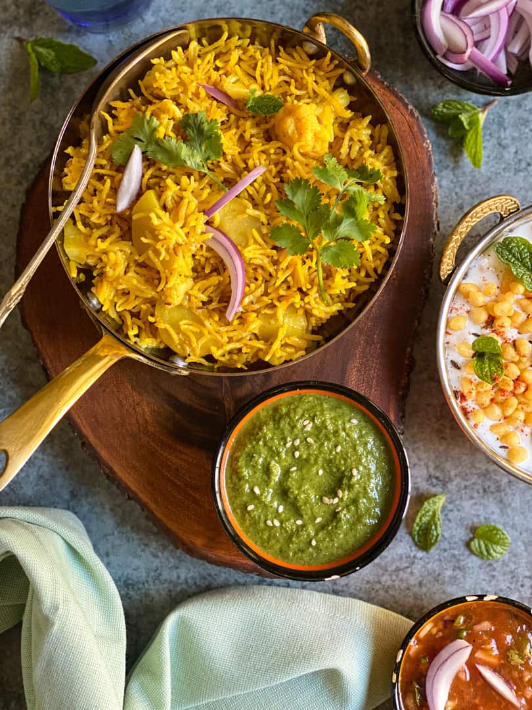

"Get ready to taste the love in every bite – where every dish is a hug from our kitchen to your heart!"
Besan ki Sabzi is a delicious and wholesome Indian dish made with gram flour, tempered with aromatic spices, and cooked to a creamy, velvety consistency. Its earthy flavors and rustic appeal make it a comforting choice, pairing beautifully with roti or rice for a satisfying homemade meal.

Tehri is a flavorful vegetarian biryani from Uttar Pradesh, made with basmati rice, mixed vegetables, and aromatic spices. This one-pot wonder combines the richness of traditional biryani with the wholesomeness of fresh vegetables, creating a perfect meal for any occasion.